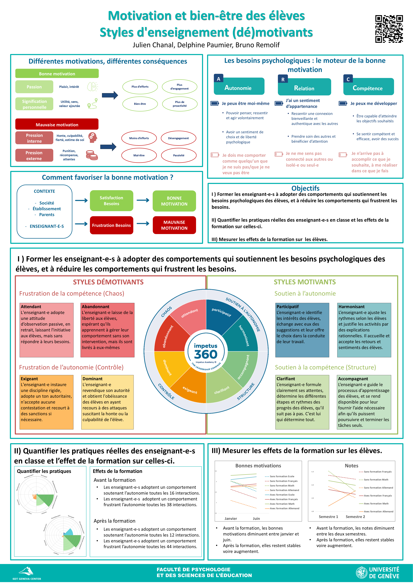
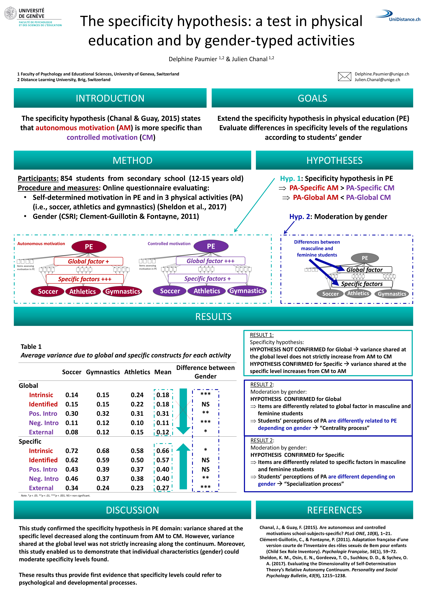
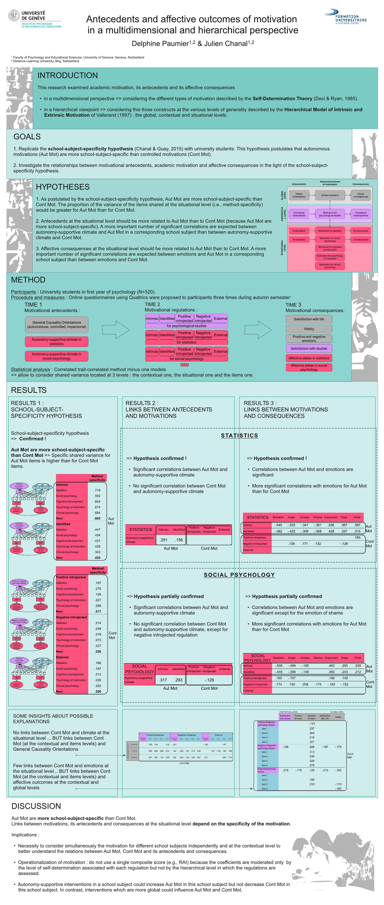

2024
Motivation et bien-être des élèves : Styles d'enseignement (dé)motivants
Premier Forum recherches-actions : Les recherches-actions au service de l'enseignement, Genève, Suisse
Julien Chanal, Delphine Paumier & Bruno Remolif

Activités scientifiques
Premier Forum recherches-actions : Les recherches-actions au service de l'enseignement, Genève, Suisse
Julien Chanal, Delphine Paumier & Bruno Remolif

7th International Self-Determination Theory Conference, Egmond aan Zee, Pays-Bas
Delphine Paumier & Julien Chanal

16th International Conference on Motivation, Aarhus, Danemark
Delphine Paumier & Julien Chanal
